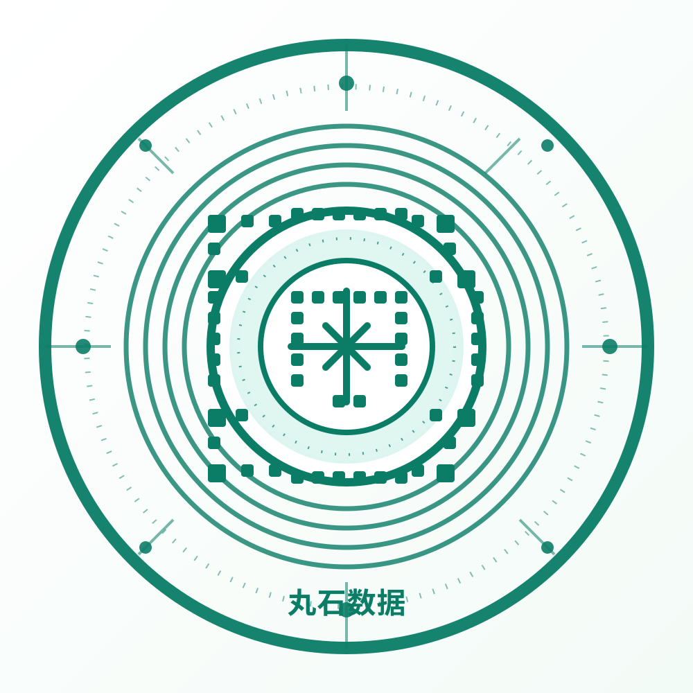

🔎
Patent search
Quickly surface relevant patent information from the market and technology landscape to identify promising themes.
SCAN the WeChat “丸石商情” to get the results of searching patent database and tech direction selectives.

Quickly surface relevant patent information from the market and technology landscape to identify promising themes.
Filter emerging technical directions and uncover the most relevant innovation tracks for founders, researchers, and investors.
Turn raw patent signals into practical decision support for product strategy, investment review, and technological screening.